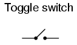
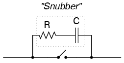
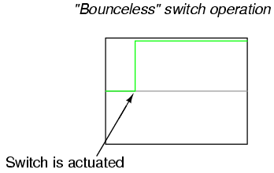

An electrical switch is any device used to interrupt the flow of electrons in a circuit. Switches are essentially binary devices: they are either completely on ("closed") or completely off ("open"). There are many different types of switches, and we will explore some of these types in this chapter.
Though it may seem strange to cover this elementary electrical topic at such a late stage in this book series, I do so because the chapters that follow explore an older realm of digital technology based on mechanical switch contacts rather than solid-state gate circuits, and a thorough understanding of switch types is necessary for the undertaking. Learning the function of switch-based circuits at the same time that you learn about solid-state logic gates makes both topics easier to grasp, and sets the stage for an enhanced learning experience in Boolean algebra, the mathematics behind digital logic circuits.
The simplest type of switch is one where two electrical conductors are brought in contact with each other by the motion of an actuating mechanism. Other switches are more complex, containing electronic circuits able to turn on or off depending on some physical stimulus (such as light or magnetic field) sensed. In any case, the final output of any switch will be (at least) a pair of wire-connection terminals that will either be connected together by the switch's internal contact mechanism ("closed"), or not connected together ("open").
Any switch designed to be operated by a person is generally called a hand switch, and they are manufactured in several varieties:

Toggle switches are actuated by a lever angled in one of two or more positions. The common light switch used in household wiring is an example of a toggle switch. Most toggle switches will come to rest in any of their lever positions, while others have an internal spring mechanism returning the lever to a certain normal position, allowing for what is called "momentary" operation.
Pushbutton switches are two-position devices actuated with a button that is pressed and released. Most pushbutton switches have an internal spring mechanism returning the button to its "out," or "unpressed," position, for momentary operation. Some pushbutton switches will latch alternately on or off with every push of the button. Other pushbutton switches will stay in their "in," or "pressed," position until the button is pulled back out. This last type of pushbutton switches usually have a mushroom-shaped button for easy push-pull action.
Selector switches are actuated with a rotary knob or lever of some sort to select one of two or more positions. Like the toggle switch, selector switches can either rest in any of their positions or contain spring-return mechanisms for momentary operation.
A joystick switch is actuated by a lever free to move in more than one axis of motion. One or more of several switch contact mechanisms are actuated depending on which way the lever is pushed, and sometimes by how far it is pushed. The circle-and-dot notation on the switch symbol represents the direction of joystick lever motion required to actuate the contact. Joystick hand switches are commonly used for crane and robot control.
Some switches are specifically designed to be operated by the motion of a machine rather than by the hand of a human operator. These motion-operated switches are commonly called limit switches, because they are often used to limit the motion of a machine by turning off the actuating power to a component if it moves too far. As with hand switches, limit switches come in several varieties:

These limit switches closely resemble rugged toggle or selector hand switches fitted with a lever pushed by the machine part. Often, the levers are tipped with a small roller bearing, preventing the lever from being worn off by repeated contact with the machine part.
Proximity switches sense the approach of a metallic machine part either by a magnetic or high-frequency electromagnetic field. Simple proximity switches use a permanent magnet to actuate a sealed switch mechanism whenever the machine part gets close (typically 1 inch or less). More complex proximity switches work like a metal detector, energizing a coil of wire with a high-frequency current, and electronically monitoring the magnitude of that current. If a metallic part (not necessarily magnetic) gets close enough to the coil, the current will increase, and trip the monitoring circuit. The symbol shown here for the proximity switch is of the electronic variety, as indicated by the diamond-shaped box surrounding the switch. A non-electronic proximity switch would use the same symbol as the lever-actuated limit switch.
Another form of proximity switch is the optical switch, comprised of a light source and photocell. Machine position is detected by either the interruption or reflection of a light beam. Optical switches are also useful in safety applications, where beams of light can be used to detect personnel entry into a dangerous area.
In many industrial processes, it is necessary to monitor various physical quantities with switches. Such switches can be used to sound alarms, indicating that a process variable has exceeded normal parameters, or they can be used to shut down processes or equipment if those variables have reached dangerous or destructive levels. There are many different types of process switches:
These switches sense the rotary speed of a shaft either by a centrifugal weight mechanism mounted on the shaft, or by some kind of non-contact detection of shaft motion such as optical or magnetic.
Gas or liquid pressure can be used to actuate a switch mechanism if that pressure is applied to a piston, diaphragm, or bellows, which converts pressure to mechanical force.
An inexpensive temperature-sensing mechanism is the "bimetallic strip:" a thin strip of two metals, joined back-to-back, each metal having a different rate of thermal expansion. When the strip heats or cools, differing rates of thermal expansion between the two metals causes it to bend. The bending of the strip can then be used to actuate a switch contact mechanism. Other temperature switches use a brass bulb filled with either a liquid or gas, with a tiny tube connecting the bulb to a pressure-sensing switch. As the bulb is heated, the gas or liquid expands, generating a pressure increase which then actuates the switch mechanism.
A floating object can be used to actuate a switch mechanism when the liquid level in an tank rises past a certain point. If the liquid is electrically conductive, the liquid itself can be used as a conductor to bridge between two metal probes inserted into the tank at the required depth. The conductivity technique is usually implemented with a special design of relay triggered by a small amount of current through the conductive liquid. In most cases it is impractical and dangerous to switch the full load current of the circuit through a liquid.
Level switches can also be designed to detect the level of solid materials such as wood chips, grain, coal, or animal feed in a storage silo, bin, or hopper. A common design for this application is a small paddle wheel, inserted into the bin at the desired height, which is slowly turned by a small electric motor. When the solid material fills the bin to that height, the material prevents the paddle wheel from turning. The torque response of the small motor than trips the switch mechanism. Another design uses a "tuning fork" shaped metal prong, inserted into the bin from the outside at the desired height. The fork is vibrated at its resonant frequency by an electronic circuit and magnet/electromagnet coil assembly. When the bin fills to that height, the solid material dampens the vibration of the fork, the change in vibration amplitude and/or frequency detected by the electronic circuit.
Inserted into a pipe, a flow switch will detect any gas or liquid flow rate in excess of a certain threshold, usually with a small paddle or vane which is pushed by the flow. Other flow switches are constructed as differential pressure switches, measuring the pressure drop across a restriction built into the pipe.
Another type of level switch, suitable for liquid or solid material detection, is the nuclear switch. Composed of a radioactive source material and a radiation detector, the two are mounted across the diameter of a storage vessel for either solid or liquid material. Any height of material beyond the level of the source/detector arrangement will attenuate the strength of radiation reaching the detector. This decrease in radiation at the detector can be used to trigger a relay mechanism to provide a switch contact for measurement, alarm point, or even control of the vessel level.

Both source and detector are outside of the vessel, with no intrusion at all except the radiation flux itself. The radioactive sources used are fairly weak and pose no immediate health threat to operations or maintenance personnel.
As usual, there is usually more than one way to implement a switch to monitor a physical process or serve as an operator control. There is usually no single "perfect" switch for any application, although some obviously exhibit certain advantages over others. Switches must be intelligently matched to the task for efficient and reliable operation.
A switch can be constructed with any mechanism bringing two conductors into contact with each other in a controlled manner. This can be as simple as allowing two copper wires to touch each other by the motion of a lever, or by directly pushing two metal strips into contact. However, a good switch design must be rugged and reliable, and avoid presenting the operator with the possibility of electric shock. Therefore, industrial switch designs are rarely this crude.
The conductive parts in a switch used to make and break the electrical connection are called contacts. Contacts are typically made of silver or silver-cadmium alloy, whose conductive properties are not significantly compromised by surface corrosion or oxidation. Gold contacts exhibit the best corrosion resistance, but are limited in current-carrying capacity and may "cold weld" if brought together with high mechanical force. Whatever the choice of metal, the switch contacts are guided by a mechanism ensuring square and even contact, for maximum reliability and minimum resistance.
Contacts such as these can be constructed to handle extremely large amounts of electric current, up to thousands of amps in some cases. The limiting factors for switch contact ampacity are as follows:
One major disadvantage of standard switch contacts is the exposure of the contacts to the surrounding atmosphere. In a nice, clean, control-room environment, this is generally not a problem. However, most industrial environments are not this benign. The presence of corrosive chemicals in the air can cause contacts to deteriorate and fail prematurely. Even more troublesome is the possibility of regular contact sparking causing flammable or explosive chemicals to ignite.
When such environmental concerns exist, other types of contacts can be considered for small switches. These other types of contacts are sealed from contact with the outside air, and therefore do not suffer the same exposure problems that standard contacts do.
A common type of sealed-contact switch is the mercury switch. Mercury is a metallic element, liquid at room temperature. Being a metal, it possesses excellent conductive properties. Being a liquid, it can be brought into contact with metal probes (to close a circuit) inside of a sealed chamber simply by tilting the chamber so that the probes are on the bottom. Many industrial switches use small glass tubes containing mercury which are tilted one way to close the contact, and tilted another way to open. Aside from the problems of tube breakage and spilling mercury (which is a toxic material), and susceptibility to vibration, these devices are an excellent alternative to open-air switch contacts wherever environmental exposure problems are a concern.
Here, a mercury switch (often called a tilt switch) is shown in the open position, where the mercury is out of contact with the two metal contacts at the other end of the glass bulb:
Here, the same switch is shown in the closed position. Gravity now holds the liquid mercury in contact with the two metal contacts, providing electrical continuity from one to the other:
Mercury switch contacts are impractical to build in large sizes, and so you will typically find such contacts rated at no more than a few amps, and no more than 120 volts. There are exceptions, of course, but these are common limits.
Another sealed-contact type of switch is the magnetic reed switch. Like the mercury switch, a reed switch's contacts are located inside a sealed tube. Unlike the mercury switch which uses liquid metal as the contact medium, the reed switch is simply a pair of very thin, magnetic, metal strips (hence the name "reed") which are brought into contact with each other by applying a strong magnetic field outside the sealed tube. The source of the magnetic field in this type of switch is usually a permanent magnet, moved closer to or further away from the tube by the actuating mechanism. Due to the small size of the reeds, this type of contact is typically rated at lower currents and voltages than the average mercury switch. However, reed switches typically handle vibration better than mercury contacts, because there is no liquid inside the tube to splash around.
It is common to find general-purpose switch contact voltage and current ratings to be greater on any given switch or relay if the electric power being switched is AC instead of DC. The reason for this is the self-extinguishing tendency of an alternating-current arc across an air gap. Because 60 Hz power line current actually stops and reverses direction 120 times per second, there are many opportunities for the ionized air of an arc to lose enough temperature to stop conducting current, to the point where the arc will not re-start on the next voltage peak. DC, on the other hand, is a continuous, uninterrupted flow of electrons which tends to maintain an arc across an air gap much better. Therefore, switch contacts of any kind incur more wear when switching a given value of direct current than for the same value of alternating current. The problem of switching DC is exaggerated when the load has a significant amount of inductance, as there will be very high voltages generated across the switch's contacts when the circuit is opened (the inductor doing its best to maintain circuit current at the same magnitude as when the switch was closed).
With both AC and DC, contact arcing can be minimized with the addition of a "snubber" circuit (a capacitor and resistor wired in series) in parallel with the contact, like this:

A sudden rise in voltage across the switch contact caused by the contact opening will be tempered by the capacitor's charging action (the capacitor opposing the increase in voltage by drawing current). The resistor limits the amount of current that the capacitor will discharge through the contact when it closes again. If the resistor were not there, the capacitor might actually make the arcing during contact closure worse than the arcing during contact opening without a capacitor! While this addition to the circuit helps mitigate contact arcing, it is not without disadvantage: a prime consideration is the possibility of a failed (shorted) capacitor/resistor combination providing a path for electrons to flow through the circuit at all times, even when the contact is open and current is not desired. The risk of this failure, and the severity of the resulting consequences must be considered against the increased contact wear (and inevitable contact failure) without the snubber circuit.
The use of snubbers in DC switch circuits is nothing new: automobile manufacturers have been doing this for years on engine ignition systems, minimizing the arcing across the switch contact "points" in the distributor with a small capacitor called a condenser. As any mechanic can tell you, the service life of the distributor's "points" is directly related to how well the condenser is functioning.
With all this discussion concerning the reduction of switch contact arcing, one might be led to think that less current is always better for a mechanical switch. This, however, is not necessarily so. It has been found that a small amount of periodic arcing can actually be good for the switch contacts, because it keeps the contact faces free from small amounts of dirt and corrosion. If a mechanical switch contact is operated with too little current, the contacts will tend to accumulate excessive resistance and may fail prematurely! This minimum amount of electric current necessary to keep a mechanical switch contact in good health is called the wetting current.
Normally, a switch's wetting current rating is far below its maximum current rating, and well below its normal operating current load in a properly designed system. However, there are applications where a mechanical switch contact may be required to routinely handle currents below normal wetting current limits (for instance, if a mechanical selector switch needs to open or close a digital logic or analog electronic circuit where the current value is extremely small). In these applications, is it highly recommended that gold-plated switch contacts be specified. Gold is a "noble" metal and does not corrode as other metals will. Such contacts have extremely low wetting current requirements as a result. Normal silver or copper alloy contacts will not provide reliable operation if used in such low-current service!
Any kind of switch contact can be designed so that the contacts "close" (establish continuity) when actuated, or "open" (interrupt continuity) when actuated. For switches that have a spring-return mechanism in them, the direction that the spring returns it to with no applied force is called the normal position. Therefore, contacts that are open in this position are called normally open and contacts that are closed in this position are called normally closed.
For process switches, the normal position, or state, is that which the switch is in when there is no process influence on it. An easy way to figure out the normal condition of a process switch is to consider the state of the switch as it sits on a storage shelf, uninstalled. Here are some examples of "normal" process switch conditions:
It is important to differentiate between a switch's "normal" condition and its "normal" use in an operating process. Consider the example of a liquid flow switch that serves as a low-flow alarm in a cooling water system. The normal, or properly-operating, condition of the cooling water system is to have fairly constant coolant flow going through this pipe. If we want the flow switch's contact to close in the event of a loss of coolant flow (to complete an electric circuit which activates an alarm siren, for example), we would want to use a flow switch with normally-closed rather than normally-open contacts. When there's adequate flow through the pipe, the switch's contacts are forced open; when the flow rate drops to an abnormally low level, the contacts return to their normal (closed) state. This is confusing if you think of "normal" as being the regular state of the process, so be sure to always think of a switch's "normal" state as that which its in as it sits on a shelf.
The schematic symbology for switches vary according to the switch's purpose and actuation. A normally-open switch contact is drawn in such a way as to signify an open connection, ready to close when actuated. Conversely, a normally-closed switch is drawn as a closed connection which will be opened when actuated. Note the following symbols:
There is also a generic symbology for any switch contact, using a pair of vertical lines to represent the contact points in a switch. Normally-open contacts are designated by the lines not touching, while normally-closed contacts are designated with a diagonal line bridging between the two lines. Compare the two:
The switch on the left will close when actuated, and will be open while in the "normal" (unactuated) position. The switch on the right will open when actuated, and is closed in the "normal" (unactuated) position. If switches are designated with these generic symbols, the type of switch usually will be noted in text immediately beside the symbol. Please note that the symbol on the left is not to be confused with that of a capacitor. If a capacitor needs to be represented in a control logic schematic, it will be shown like this:
In standard electronic symbology, the figure shown above is reserved for polarity-sensitive capacitors. In control logic symbology, this capacitor symbol is used for any type of capacitor, even when the capacitor is not polarity sensitive, so as to clearly distinguish it from a normally-open switch contact.
With multiple-position selector switches, another design factor must be considered: that is, the sequence of breaking old connections and making new connections as the switch is moved from position to position, the moving contact touching several stationary contacts in sequence.
The selector switch shown above switches a common contact lever to one of five different positions, to contact wires numbered 1 through 5. The most common configuration of a multi-position switch like this is one where the contact with one position is broken before the contact with the next position is made. This configuration is called break-before-make. To give an example, if the switch were set at position number 3 and slowly turned clockwise, the contact lever would move off of the number 3 position, opening that circuit, move to a position between number 3 and number 4 (both circuit paths open), and then touch position number 4, closing that circuit.
There are applications where it is unacceptable to completely open the circuit attached to the "common" wire at any point in time. For such an application, a make-before-break switch design can be built, in which the movable contact lever actually bridges between two positions of contact (between number 3 and number 4, in the above scenario) as it travels between positions. The compromise here is that the circuit must be able to tolerate switch closures between adjacent position contacts (1 and 2, 2 and 3, 3 and 4, 4 and 5) as the selector knob is turned from position to position. Such a switch is shown here:
When movable contact(s) can be brought into one of several positions with stationary contacts, those positions are sometimes called throws. The number of movable contacts is sometimes called poles. Both selector switches shown above with one moving contact and five stationary contacts would be designated as "single-pole, five-throw" switches.
If two identical single-pole, five-throw switches were mechanically ganged together so that they were actuated by the same mechanism, the whole assembly would be called a "double-pole, five-throw" switch:
Here are a few common switch configurations and their abbreviated designations:
When a switch is actuated and contacts touch one another under the force of actuation, they are supposed to establish continuity in a single, crisp moment. Unfortunately, though, switches do not exactly achieve this goal. Due to the mass of the moving contact and any elasticity inherent in the mechanism and/or contact materials, contacts will "bounce" upon closure for a period of milliseconds before coming to a full rest and providing unbroken contact. In many applications, switch bounce is of no consequence: it matters little if a switch controlling an incandescent lamp "bounces" for a few cycles every time it is actuated. Since the lamp's warm-up time greatly exceeds the bounce period, no irregularity in lamp operation will result.
However, if the switch is used to send a signal to an electronic amplifier or some other circuit with a fast response time, contact bounce may produce very noticeable and undesired effects:
A closer look at the oscilloscope display reveals a rather ugly set of makes and breaks when the switch is actuated a single time:
If, for example, this switch is used to provide a "clock" signal to a digital counter circuit, so that each actuation of the pushbutton switch is supposed to increment the counter by a value of 1, what will happen instead is the counter will increment by several counts each time the switch is actuated. Since mechanical switches often interface with digital electronic circuits in modern systems, switch contact bounce is a frequent design consideration. Somehow, the "chattering" produced by bouncing contacts must be eliminated so that the receiving circuit sees a clean, crisp off/on transition:

Switch contacts may be debounced several different ways. The most direct means is to address the problem at its source: the switch itself. Here are some suggestions for designing switch mechanisms for minimum bounce:
Each one of these suggestions sacrifices some aspect of switch performance for limited bounce, and so it is impractical to design all switches with limited contact bounce in mind. Alterations made to reduce the kinetic energy of the contact may result in a small open-contact gap or a slow-moving contact, which limits the amount of voltage the switch may handle and the amount of current it may interrupt. Sliding contacts, while non-bouncing, still produce "noise" (irregular current caused by irregular contact resistance when moving), and suffer from more mechanical wear than normal contacts.
Multiple, parallel contacts give less bounce, but only at greater switch complexity and cost. Using mercury to "wet" the contacts is a very effective means of bounce mitigation, but it is unfortunately limited to switch contacts of low ampacity. Also, mercury-wetted contacts are usually limited in mounting position, as gravity may cause the contacts to "bridge" accidently if oriented the wrong way.
If re-designing the switch mechanism is not an option, mechanical switch contacts may be debounced externally, using other circuit components to condition the signal. A low-pass filter circuit attached to the output of the switch, for example, will reduce the voltage/current fluctuations generated by contact bounce:
Switch contacts may be debounced electronically, using hysteretic transistor circuits (circuits that "latch" in either a high or a low state) with built-in time delays (called "one-shot" circuits), or two inputs controlled by a double-throw switch. These hysteretic circuits, called multivibrators, are discussed in detail in a later chapter.
Lessons In Electric Circuits copyright (C) 2000-2023 Tony R. Kuphaldt, under the terms and conditions of the CC BY License.